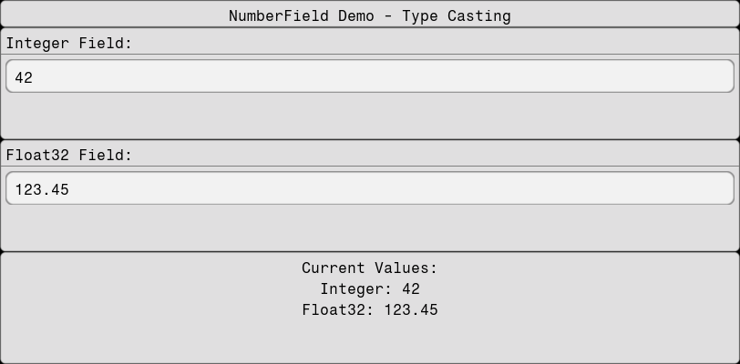

NumberField
The NumberField component provides type-safe numeric input with automatic parsing and validation. It extends the TextBox functionality to handle numeric types like Int, Float32, Float64, etc.
using Fugl
function MyApp()
# Store EditorState instead of values
int_state = Ref(EditorState("42"))
float_state = Ref(EditorState("123.45"))
IntrinsicColumn([
IntrinsicHeight(Container(Fugl.Text("NumberField Demo - Type Casting"))),
# Integer field
Card(
"Integer Field:",
NumberField(
int_state[];
type=Int,
on_state_change=(new_state) -> int_state[] = new_state,
on_change=(new_value) -> println("Integer changed to: ", new_value, " (type: ", typeof(new_value), ")")
)
),
# Float32 field
Card(
"Float32 Field:",
NumberField(
float_state[];
type=Float32,
on_state_change=(new_state) -> float_state[] = new_state,
on_change=(new_value) -> println("Float32 changed to: ", new_value, " (type: ", typeof(new_value), ")")
)
),
Container(
IntrinsicColumn([
# Display current values - display the state text and parsed values
IntrinsicHeight(Fugl.Text("Current Values:")),
IntrinsicHeight(Fugl.Text("Integer: $(int_state[].text)")),
IntrinsicHeight(Fugl.Text("Float32: $(float_state[].text)")),
], padding=0.0, spacing=5.0)
)
], padding=0.0, spacing=0.0)
end
screenshot(MyApp, "numberField.png", 812, 400);
Focus and Blur Events
NumberField supports on_focus and on_blur callbacks for handling focus changes.
This is useful to avoid doing bigger processing tasks for each value change.
using Fugl
status = Ref("Field is unfocused")
number_state = Ref(EditorState("3.14159"))
function MyApp()
# Dark theme styles
dark_container_style = ContainerStyle(
background_color = Vec4f(0.12, 0.12, 0.12, 1.0),
border_color = Vec4f(0.3, 0.3, 0.3, 1.0),
border_width = 1.0f0,
corner_radius = 8.0f0,
padding = 20.0f0
)
dark_text_style = TextStyle(
color = Vec4f(0.9, 0.9, 0.9, 1.0),
size_px = 14
)
dark_field_style = TextBoxStyle(
text_style = TextStyle(color = Vec4f(0.9, 0.9, 0.9, 1.0), size_px = 14),
background_color_focused = Vec4f(0.2, 0.2, 0.25, 1.0),
background_color_unfocused = Vec4f(0.15, 0.15, 0.15, 1.0),
border_color = Vec4f(0.4, 0.6, 0.8, 1.0),
border_width = 1.5f0,
corner_radius = 6.0f0
)
status_color = status[] == "Field is focused!" ? Vec4f(0.2, 0.8, 0.2, 1.0) : Vec4f(0.8, 0.6, 0.2, 1.0)
Container(
IntrinsicColumn([
Fugl.Text("Status: $(status[])", style=TextStyle(size_px=14, color=status_color)),
NumberField(
number_state[];
type=Float64,
style=dark_field_style,
on_state_change=(new_state) -> number_state[] = new_state,
on_focus=() -> status[] = "Field is focused!",
on_blur=() -> status[] = "Field lost focus"
)
], spacing=10.0f0),
style=dark_container_style
)
end
screenshot(MyApp, "numberfield_focus_blur.png", 812, 120);